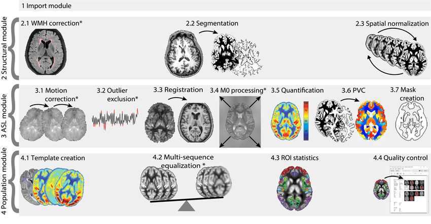

Home


Description
ExploreASL is a pipeline and toolbox for image processing and statistics of arterial spin labeling perfusion MR images. It is designed as a multi-OS, open source, collaborative framework that facilitates cross-pollination between image processing method developers and clinical investigators.
The software provides a complete head-to-tail approach that runs fully automatically, encompassing all necessary tasks from data import and structural segmentation, registration and normalization, up to CBF quantification. In addition, the software package includes and quality control (QC) procedures and region-of-interest (ROI) as well as voxel-wise analysis on the extracted data. To-date, ExploreASL has been used for processing ~10000 ASL datasets from all major MRI vendors and ASL sequences, and a variety of patient populations, representing ~30 studies. The ultimate goal of ExploreASL is to combine data from multiple studies to identify disease related perfusion patterns that may prove crucial in using ASL as a diagnostic tool and enhance our understanding of the interplay of perfusion and structural changes in neurodegenerative pathophysiology.
Additionally, this (semi-)automatic pipeline allows us to minimize manual intervention, which increases the reproducibility of studies.
Installation
To use ExploreASL within Matlab, you can download a stable release version from the GitHub releases section. Navigate within Matlab to the ExporeASL directory, to make ExploreASL the current working directory. To start ExploreASL from Matlab, type:
ExploreASL
Workflow

Documentation
Additional information about ExploreASL can be found in the Neuroimage paper and on the ExploreASL website, including the walkthrough document and how-to videos. Further documentation is work in progress. For any help please contact the lead authors/developers at h.j.mutsaerts@amsterdamumc.nl or j.petr@hzdr.de.
ExploreASL team
- Henk Mutsaerts - co-creator
- Jan Petr - co-creator
- Michael Stritt - PhD student, ASPIRE
- Paul Groot - developer backbone, IT specialist
- Pieter Vandemaele - developer Matlab BIDS app
- Luigi Lorenzini - developer ExploreQC
- Maurice Pasternak - developer GUI
- Mathijs Dijsselhof - PhD student, Cerebrovascular Age
- Beatriz Padrela - PhD student, BBB-ASL
- Sandeep Ganji - developer integration Philips ISD
- Patricia Clement - developer ASL-BIDS & organizer
Acknowledgments
This project is supported by the Dutch Heart Foundation (2020T049), the Eurostars-2 joint programme with co-funding from the European Union Horizon 2020 research and innovation programme (ASPIRE E!113701), including the Netherlands Enterprise Agency (RvO), and by the EU Joint Program for Neurodegenerative Disease Research, including the Netherlands Organisation for health Research and Development and Alzheimer Nederland (DEBBIE JPND2020-568-106).
This project has previously received support from the following EU/EFPIA Innovative Medicines Initiatives (1 and 2) Joint Undertakings: EPAD grant no. 115736, AMYPAD grant no. 115952 and Amsterdam Neuroscience. The authors wish to thank the COST-AID (European Cooperation in Science and Technology - Arterial spin labeling Initiative in Dementia) Action BM1103 and the Open Source Initiative for Perfusion Imaging (OSIPI) and the ISMRM Perfusion Study groups for facilitating meetings for researchers to discuss the implementation of ExploreASL. The authors acknowledge Guillaume Flandin, Robert Dahnke, and Paul Schmidt for reviewing the structural module for its implementation of SPM12, CAT12, and LST, respectively; Krzysztof Gorgolewksi for his advice on the BIDS implementation; Jens Maus for help with MEX compilation; Cyril Pernet for providing the SPM Univariate Plus QC scripts.
Contributors ✨
Thanks goes to these wonderful people (emoji key):


This project follows the all-contributors specification. Contributions of any kind welcome!
How to cite
The bare minimum of references is the ExploreASL manuscript and the used ExploreASL release, which you can find on Zenodo (e.g. version 1.3.0).
The following provides an example as how to correctly cite ExploreASL and its third-party tools. The versions of the included third-party tools are described in CHANGES.md for each ExploreASL release.
The data were analysed using ExploreASL
ref1version x.x.xref2, including SPM12 version xxxxref3, CAT12 version xxxxref4, and LST version x.x.xref5. This Matlab-based software was used with Matlab (MathWorks, MA, USA) version x.x (yearx)ref6.
- Ref1: the ExploreASL paper, describing the full pipeline and decisions for processing steps: https://www.sciencedirect.com/science/article/pii/S1053811920305176
- Ref2: the Zenodo DOI for the actual ExploreASL release used to analyse the data. The release numbers (e.g. 1.3.0) follow semantic versioning.
- Ref3: SPM12 references: https://www.sciencedirect.com/science/article/pii/S1053811920305176#bib14 & https://www.sciencedirect.com/science/article/pii/S1053811920305176#bib53. Note that the SPM version (e.g. 7219) is adapted and extended for use with ExploreASL.
- Ref4: CAT12 reference: https://www.sciencedirect.com/science/article/pii/S1053811920305176#bib55. Note that the CAT12 version (e.g. 1364) is adapted for use with ExploreASL.
- Ref5: LST reference: https://www.sciencedirect.com/science/article/pii/S1053811920305176#bib118. Note that the LST version (e.g. 2.0.15) is adapted for use with ExploreASL.
- Ref6: Matlab publishes a release twice yearly, which can be reviewed here: https://www.mathworks.com/products/compiler/matlab-runtime.html. You can provide the release number (e.g. 9.4) or year number (e.g. 2018a), or both.